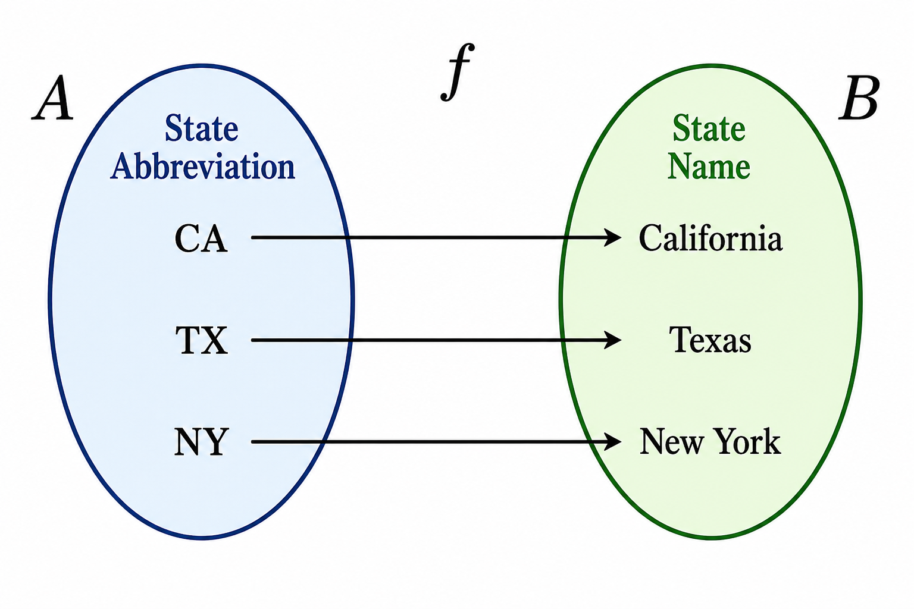
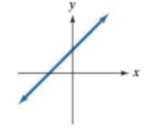
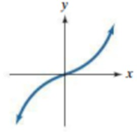
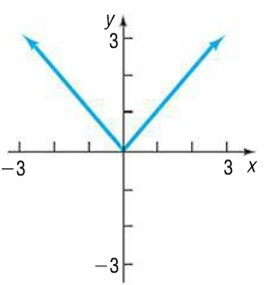
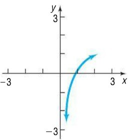

Inverse Functions
Understanding Inverse Functions
Many real-life actions have reverses. For example:
- Opening a window → closing the window
- Walking into a room and picking up a book → putting down the book and leaving the room
Mathematical processes can also be reversed.
The inverse of “multiply by 2 then add 5” is:
subtract 5, then divide by 2.
Definition and Visual Meaning
Inverse Function
If \(f\) is a function, its inverse is denoted \(f^{-1}\), where: \[f(f^{-1}(x))=x \text{ and } f^{-1}(f(x))=x\]
Draw the inverse of a function \(f\) using the information that \(f(a)=b\) (which means that \(f^{-1}(b)=a\) ).
Graphing area used to visualize inverse functions.
Use the image below of a mapping \(f\) between state abbreviations and state names to draw an image of the inverse function.

Just like real life phenomena that are not reversible, there are functions that are not reversible as well. Observe the following function and predict what you think the inverse function should behave like.
In the space below we will draw two functions. One of them is reversible, and the other is not. See if you can tell which one has an inverse.
Graphing area used to visualize two functions.
One-to-One Functions
As we see from the example above, only one-to-one functions have inverses.
One-to-One Function
A function is said to be one-to-one if each input corresponds to a unique output. That is to say, if we have two input values of \(x_1\) and \(x_2\) where \(x_1 \ne x_2\), then they correspond to different output values of \(y_1\) and \(y_2\) where \(y_1 \ne y_2\).
Tell if the following functions are one-to-one. If they are, tell the inverse function (or draw it) for each one.
-
\(\lbrace (-2,1),(-1,4),(2,9),(-10,0)\rbrace\)
-

-

-

-

Properties of Inverses
-
If \((3,-1)\) is on the graph of \(f\), tell a point that is on the graph of \(f^{-1}\)?
-
If \(f\) has domain \(D=(-\infty,2]\cup(7,\infty)\) and range \(R = [1,6)\), what are the domain and range of \(f^{-1}\)?
-
Explain the difference between \(f^{-1}(x)\) and \(\left(f(x)\right)^{-1}\).
Steps to Find an Inverse
- Replace \(f(x)\) with \(y\)
- Swap \(x\) and \(y\)
- Solve for \(y\)
- Rewrite as \(f^{-1}(x)\)
For the problems below, find the inverse of each function.
-
\(f(x) = 2x + 3\)
-
\(f(x) = \sqrt{x-2}+1\)
-
\(f(x) = \cfrac{5}{x+3}\)